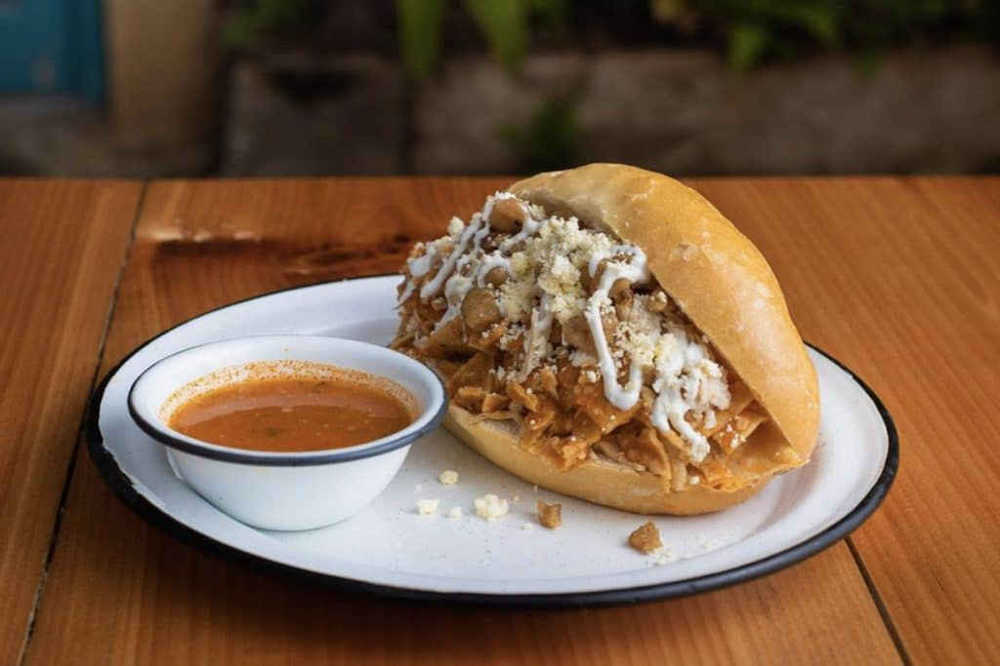

Acerca
La Ciudad de México no se visita, se vive. Durante el Mundial, la capital se transforma en un punto de encuentro donde el fútbol se mezcla con historia. Aquí encontrarás cómo moverte, qué ver, qué comer y cómo experimentar la ciudad más allá de los estadios.


¿De qué va este proyecto?
Es una guía turística digital de la Ciudad de México pensada tanto para visitantes extranjeros que llegan por el Mundial como para personas nacionales y locales que quieren redescubrir la ciudad. El sitio reúne información práctica, recomendaciones culturales
Objetivo
Ayudar a viajeros nacionales e internacionales a moverse, explorar y vivir la CDMX de forma auténtica, combinando cultura, gastronomía y vida urbana en una experiencia completa y memorable.